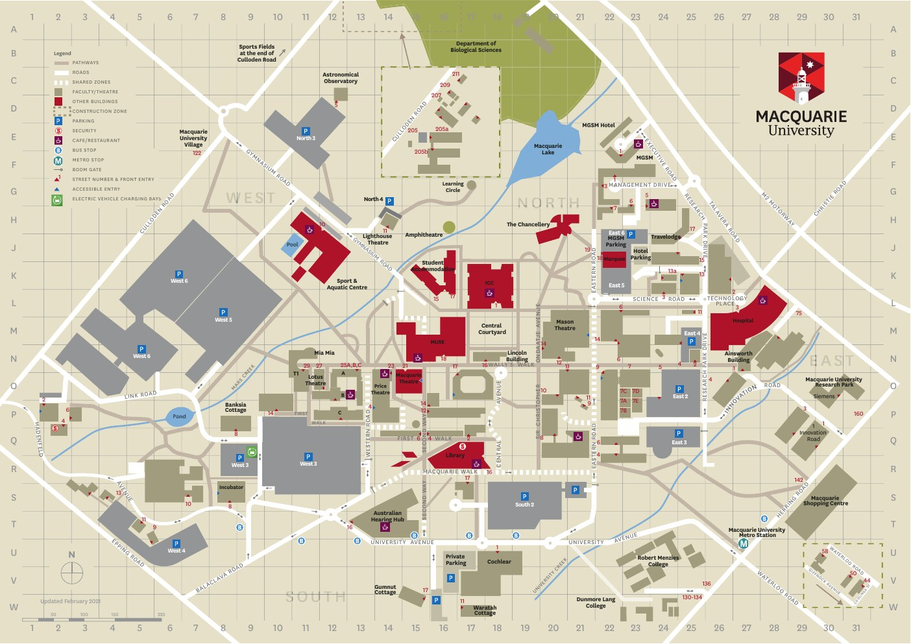
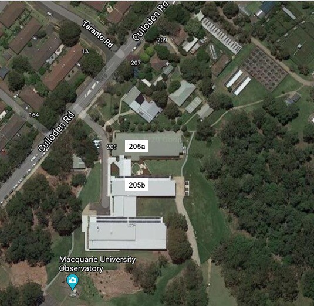

Contact
Get in touch
Email
martin.whiting@mq.edu.au
205b Culloden Rd
Macquarie University NSW 2109
Australia
Mailing address
School of Natural Sciences
14 Eastern Rd
Macquarie University
NSW 2109 · Australia
Physical address
Bio-Research Park14 Eastern Rd
Macquarie University
NSW 2109 · Australia
205b Culloden Rd
Macquarie University NSW 2109
Australia
Join the lab
Prospective MRes and PhD students
Interested in postgraduate research with The Lizard Lab? Explore Macquarie University courses and current research scholarship opportunities. Studying in the lab requires two things: a student needs to receive a scholarship and there needs to be funding for the research project. Unfortunately, there is not enough time to start a PhD and then find funding along the way.
How to apply for MRes, PhD degrees
Explore research degrees How to apply Postgraduate coursesScholarship opportunities
Scholarship opportunities Scholarship search External scholarships and grants Domestic scholarship roundStudent life
Living in Sydney
Practical information for students moving to Sydney, including accommodation, living costs, transport, health cover and working while studying.
Accommodation and living costs
Macquarie University accommodation Fees and living costs Cost-of-living calculator NSW advice for rentersGetting around Sydney
Transport for NSW and trip planner Student public-transport concessionsInternational students
Living and studying in Sydney Overseas Student Health Cover Working while studying City of Sydney student resourcesFinding us
Campus and Fauna Park maps

